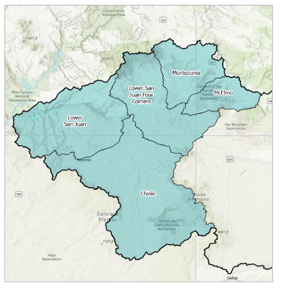

Datasets & reports
Water quality monitoring data, watershed spreadsheets by subwatershed, and the dashboards and tools used to develop and track this plan.
The Water Quality Portal (WQP) is the national clearinghouse for water quality monitoring data from USGS, EPA, and hundreds of state, local, and tribal agencies — including much of the raw monitoring data behind this plan. Use the steps alongside to run your own query.
Open the Water Quality Portal
Lower San Juan — open sheet Lower San Juan-Four Corners — open sheet Montezuma — open sheet McElmo — open sheet Chinle — open sheetAdd 1–2 sentences: what this dashboard tracks and who it's for.
Open dashboardAdd 1–2 sentences: what metals data this shows and its geographic scope.
Open dashboardAdd 1–2 sentences: what this GIS tool covers and how it relates to the watershed.
Open map toolAdd 1–2 sentences: what BMPs this tool helps select and who it's built for.
Open toolLocal observations, monitoring records, or corrections help keep this data current and accurate.